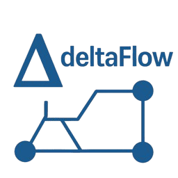

|
deltaFlow
|
|
deltaFlow
|

deltaFlow is a command-line tool that solves steady-state power flow problems using numerical methods like Gauss-Seidel and Newton-Raphson. It reads input from CSV files for bus and branch data.
Requires: A C++17-compatible compiler and CMake.
Build the project with:
Other options:
-b, --build: Build only (no tests)-d, --doc: Generate documentation (requires Doxygen)-b, --bus <file>: Bus data CSV-l, --branch <file>: Branch data CSV<method>: Power flow method (gauss-seidel or newton-raphson)-t, --tolerance <value>: Convergence tolerance (default: 1E-8)-m, --max-iterations <int>: Max iterations (default: 1024)-r, --relaxation <value>: Relaxation factor (Gauss-Seidel only, default: 1.0)-h, --help: Show help-v, --version: Show version--relaxation is ignored with Newton-Raphson.Generate with: